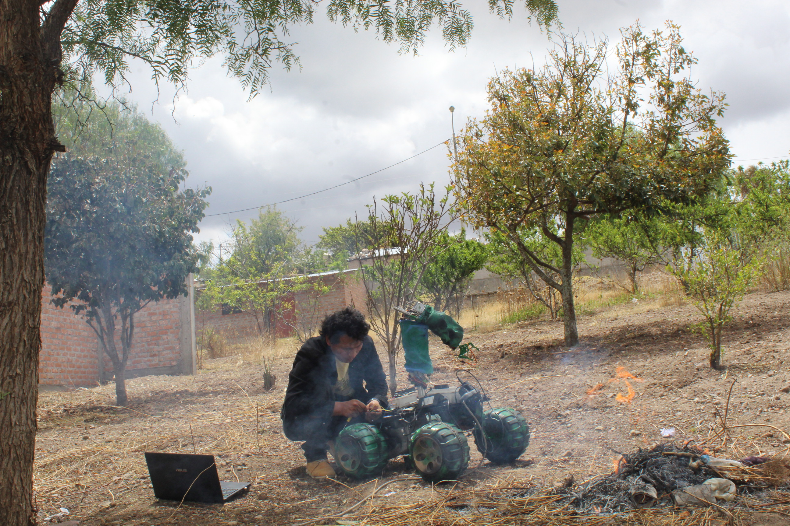
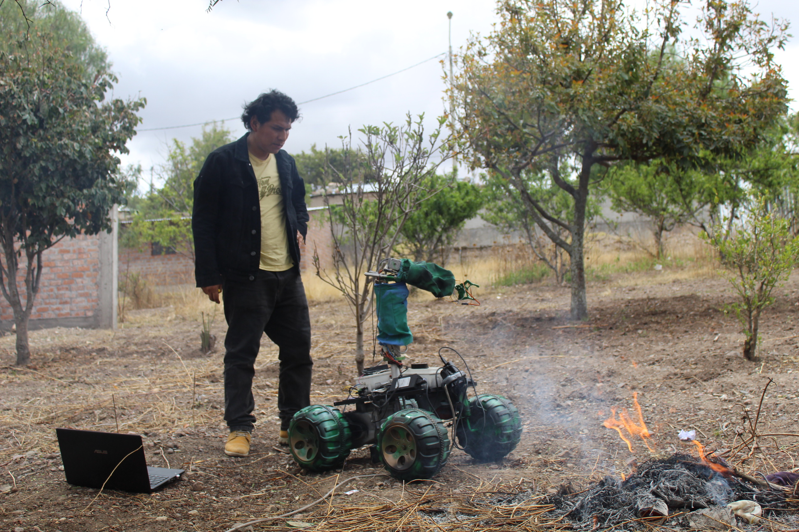

Robot Colaborativos de defensa y miliitar
En el presente espacio les presentamos los mejores Robot desarrollados por nuestra empresa Villa Automation S.A.C

En los sistemas de defensa y operaciones militares en nuestro país como Perú, los soldados y operarios están expuestos constantemente a altos niveles de riesgo en tareas como reconocimiento de terreno, desactivación de explosivos, transporte de material en zonas hostiles o vigilancia en tiempo real. El presente proyecto es modelar, desarrollar e implementar un prototipo de robot colaborativo con navegación autónoma, sensores avanzados y comunicación segura. asimismo, los modelos de control y fusión sensorial aplicados a entornos hostiles reduzcan el riesgo humano en operaciones críticas y apoyo en misiones de vigilancia y logística. Innovador: Introducción de la robótica colaborativa en defensa en el contexto peruano, con potencial de aplicación en otros sectores. Académico y Social: Generación de conocimientos, metodologías y capacidades locales en robótica avanzada. El modelamiento eléctrico y mecánico de los motores de tracción permitió representar con precisión el comportamiento dinámico del sistema. La respuesta simulada de velocidad, corriente y posición mostró una alta correlación con los resultados experimentales. El acoplamiento del sistema de tracción con el brazo robótico demostró un funcionamiento coordinado, permitiendo que el robot ejecute movimientos de aproximación y manipulación de objetos sin comprometer la estabilidad global. Este comportamiento evidencia la correcta distribución de pesos, el equilibrio de los actuadores y la eficiencia de la arquitectura de control distribuido. El proyecto Sentinel-XVA constituye una contribución significativa al desarrollo de robots colaborativos de aplicación militar y de defensa, integrando principios de automatización, control avanzado y diseño mecatrónico. Los resultados demuestran que la plataforma es capaz de operar de forma autónoma y estable bajo condiciones reales, consolidándose como una base experimental para futuras investigaciones orientadas a control predictivo, percepción inteligente y cooperación multi-robot.
- Movilidad autónoma (o semiautónoma) en entornos operativos.
- Brazo robótico con sensores y actuadores: permite manipulación,detección, carga y trabajo colaborativo.
- Inteligencia artificial que permite “aprender y optimizar desempeño conforme trabaja”.
- Sensores para detección de gases tóxicos, quimicos inflamables, calidad de aire, parametros climaticos en determinado medio y otros
- Sensores disponibles: LiDAR (especificar modelo/rango), cámaras RGB/IR, sensores ultrasónicos, IMU/GNSS.
- Interfaces de comunicación remota: Wi‑Fi, LTE/4G, LoRa, blothoo midiante nuestro app: villa automation:
- Aplicaciones militares/defensa y otras actividades
üì≤ Descargar en Google Play
Se diseña el robot colaborativo con múltiples grados de libertad, utilizando motores, servomotores para cada articulación y unos sensores para la detección de objetos e inspección. Se implementó un control predictivo que anticipa el error futuro y ajusta la posición de cada articulación para mejorar la precisión del movimiento.
El robot colaborativo Sentinel-XVA se encuentra en reposo y próximo al operador, luego se observa el brazo robótico articulado en posición de espera, con el efector final orientado hacia adelante. Luego el operador activa el sistema de control o cargar la misión mediante una interfaz (una computadora configura al sistema embarcado). En esta etapa, el sistema realiza: La inicialización de sensores (encoders, IMU, cámaras o sensores de proximidad). Luego la sincronización de los actuadores de tracción y articulaciones del brazo. La calibración de posición base (homing) para definir el punto cero del manipulador. Se inicia la fase de preparación operacional del robot, asegurando condiciones de estabilidad y alineación de los ejes motrices antes del desplazamiento.

El robot se encuentra en movimiento hacia un punto de interés, mientras el operador monitorea su avance. Luego el brazo comienza a moverse simultáneamente, ajustando su orientación respecto al entorno, lo que indica una coordinación entre la locomoción y la manipulación. El sistema de control emplea un modelo cinemático acoplado, donde el movimiento del vehículo (plataforma diferencial o 4WD) y el del brazo se sincronizan para mantener el equilibrio y la orientación.

El robot alcanza el objetivo final (zona de trabajo, marcador o fuente de calor), asimismo el brazo se mantiene en posición fija, lo que indica el fin de la operación manipulativa o la verificación de una tarea completada (por ejemplo, inspección, reconocimiento o despliegue de instrumento). Los sistemas de control reducen gradualmente la tensión de los motores, logrando una parada estable sin sobreoscilaciones
El robot en esta escena mide temperatura y humedad con un sensor tipo DHT22. Si detecta condiciones de riesgo (por ejemplo, T° > 45°C o humedad < 30%), el brazo activa la pinza para “agarrar” o “retirar” el objeto peligroso Fig . Todo el proceso se visualiza en el Plotter Serial en tiempo real con: Posiciones del brazo (Hombro, Codo). Señales PID (U1, U2). Estado de la pinza. Temperatura y humedad. Curvas Hombro y Codo (rojo y azul): Las señales oscilan al inicio y luego se estabilizan, lo que indica que el control PID está corrigiendo el error de posición. Luego las pequeñas oscilaciones residuales son normales en sistemas simulados con ruido o desratización (Ts=0.1 s). Esto significa que el control logra estabilidad, pero todavía hay margen para afinar Kp, Ki, Kd si quieres una respuesta más suave. ? Volver a la página principal